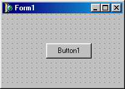
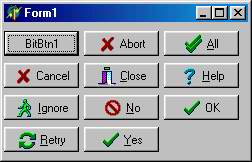
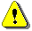
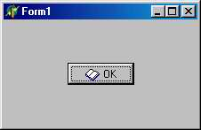

TButton - кнопка
 Кнопки TButton широко используются для управления программами. Связанный с кнопкой алгоритм управления реализуется в обработчике события OnClick.
Рисунок 1 - Кнопка
Свойства компонента:
|
property Cancel: Boolean; |
Если имеет значение True, событие OnClick кнопки возникает при нажатии клавиши Esc |
|
property Default: Boolean; |
Если имеет значение True, событие OnClick кнопки возникает при нажатии клавиши Enter |
В отличие от большинства других видимых компонентов кнопка TButton является компонентом самой Windows и поэтому не может изменять свой цвет произвольным образом - она его меняет вместе с изменением палитры Windows. Кнопка всегда имеет системный цвет clBtnFace и не имеет свойства Color. Шрифт надписи на кнопке может менять свой стиль и размер, но компонент игнорирует изменение его цвета.
Основное с точки зрения внешнего вида свойство кнопки – Caption (надпись). В надписях кнопок можно предусматривать использование клавиш ускоренного доступа, выделяя для этого один из символов надписи. Перед символом, который должен соответствовать клавише ускоренного доступа, ставится символ амперсанта «&». Этот символ не появляется в надписи, еа следующий за ним символ оказывается подчёркнутым. Тогда пользователь, вместо щелчка по кнопке нажать в любой момент клавишу Alt совместно с клавишей выделенного символа – это будет эквивалентно щелчку на кнопке.
TBitBtn - кнопка с изображением
Пиктографическая кнопка TBitBtn представляет собой популярную разновидность стандартной кнопки TButton. Ее отличительная особенность - свойство Glyph, с помощью которого определяется растровое изображение, рисуемое на поверхности кнопки. В состав поставки Delphi входит множество рисунков, разработанных специально для размещения в этих кнопках (по умолчанию для старших версий Delphi эти рисунки размещаются в папке program Files |
Common Files | Borland Shared | Images | Buttons, для остальных версий - в папке images l Buttons каталога размещения Delphi).
Свойство Kind определяет одну из 11 стандартных разновидностей кнопки, показанных на рис. 18.9.

Рисунок 1- . Разновидности кнопок TBitBtn
Нажатие любой из них, кроме bkCustom и bkHelp, закрывает модальное окно и возвращает в программу результат mrxxx: bkok - mrОk, bkCancel - mrCancel и т.д. Кнопка bkClose для модального окна возвращает mrCancel, а для главного окна программы - закрывает его и завершает работу программы. Кнопка bkHelp автоматически вызывает раздел справочной службы, связанный с Helpcontext формы, на которую она помещена. Если у кнопки была изменена пиктограмма Glyph, Delphi автоматически присвоит ей Kind=bkCustom. Это произойдет также в случае, когда кнопка указана как умалчиваемая (Defauit=True), но Kind не содержит bkok или bkYes, а также если ее свойство Cancel содержит True, a Kind нe содержит bkCancel или bkNo.
Свойства Cancel, Default и ModalResult кнопка TBitBtn унаследовала у своего родительского класса TButton, остальные специфичные свойства указаны ниже:
|
property Glyph: TBitmap; |
Определяет от 1 до 4 связанных с кнопкой растровых изображения (см. ниже) |
|
TBitBtnKind = (bkCustom, bkOK, bkCancel, bkHelp, bkYes, bkNo, bkClose, bkAbort, bkRetry, bklg-nore, bkAll) ; property Kind: TBitBtnKind; |
Определяет разновидность кнопки |
|
TButtonLayout = (bIGlyphLeft, bIGlyphRight, bIGlyphTop, bIGlyphBottom) ; property Layout: TButtonLayout; |
Определяет край кнопки, к которому прижимается пиктограмма: bIGlyphLeft - к левому; bIGlyphRight - к правому; bIGlyphTop - к верхнему;biGlyphBottom - к нижнему) |
|
property Margin: Integer; |
Определяет расстояние в пикселях от края кнопки до пиктограммы |
|
TNumGlyphs: 1..4 ; property NumGlyphs: TNumGlyphs; |
Определяет количество растровых изображений (см.ниже) |
|
property Spacing: Integer; |
Определяет расстояние в пикселях от пиктограммы до надписи на кнопке |
|
TByttonStyle = (bsAutoDetect, bsWinSI, bsNew) ; property Style: TButtonStyle; |
Определяет стиль оформления кнопки, зависящий от операционной системы. Стиль bsNew соответствует 32-разрядным версиям Windows. Стиль bsAutoDetect изменяет оформление кнопки в зависимости от ОС, под управлением которой работает программа в данный момент |
 При разработке собственных растровых изображений для использования в кнопках следует учесть, что изображения должны меняться? при изменении состояния кнопки. Таких состояний может быть четыре: нормальное, запрещенное, нажатое и утопленное (последнее используется только в кнопках TSpeedButton). В соответствии с этим! разрабатывается до 4 пиктограмм, расположенных по горизонтали ввиде одного длинного растра. Например, стандартный размер пиктограммы для размещения на кнопке равен 16х16 пикселей. Если создаются 3 пиктограммы, размер растра должен составлять 48х16. Количество пиктограмм в растре задается свойством NumGlyphs. Если каждая; пиктограмма - квадратная и длина растра делится без остатка; на его высоту, Delphi автоматически распознает количество пиктограмм. Если задана только одна пиктограмма, ее изображение, меняется автоматически: в состоянии “нажатая” пиктограмма смещается! на один пиксель вправо и, вниз, а в состоянии “запрещенная” все цвета, кроме черного, меняются на светло-серый, а черный на белый, что обеспечивает эффект "вдавленности" изображения. Следует так же учесть, что самый левый нижний пиксель растра определяет цвет прозрачности: на кнопке этот цвет будет заменяться цветом поверхности кнопки.
Как и в кнопках TButton, программист не может управлять цветом поверхности кнопки, но в отличие от TButton может менять цвет надписи на ней. С помощью свойства Default кнопку можно сделать умалчиваемой - в этом случае нажатие Enter автоматически вызывает обработчик ее события OnClick. Однако умалчиваемыми можно сделать только кнопки bkYes и bkNo, остальные значения свойства Kind будут заменяться на bkcustom при размещении в Default значения True и наоборот - в Default автоматически помещается False при установке в Kind любого значения, кроме bkYes, bkNo или bkcustom.
TSpeedButton - кнопка для инструментальных панелей
 Кнопки TSpeedButton отличаются от TBitBtn Тремя обстоятельствами: во-первых, они могут фиксироваться в утопленном состоянии, во-вторых, они не могут закрыть модальное окно, в третьих, они не могут быть умалчиваемыми. Во всем остальном они повторяют свойства и методы TBitBtn.
Для фиксации кнопка должна быть отнесена к какой-либо группе кнопок (эта группа может состоять из нее одной - вариант одиночной фиксируемой кнопки). Для этого используется свойство GroupIndex: Integer, которое не должно быть равно 0. Поведение кнопки определяется логическим свойством AllowAllup: если это свойство имеет значение True, утопленная кнопка отпускается только при нажатии любой другой кнопки, входящей в ту же группу; если AllowAllup=False, кнопку можно освободить повторным щелчком. Индикатором состояния кнопки служит логическое свойство Down, которое имеет значение True, если кнопка утоплена. Свойство доступно для записи, что позволяет изменять состояние кнопки программно.
Для кнопки TSpeedButton предусмотрено событие onDbclick, которое возникает при двойном щелчке на утопленной кнопке.